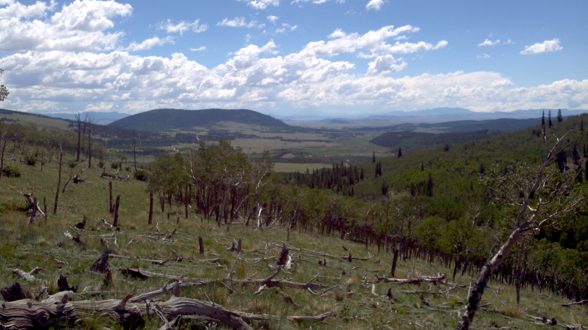
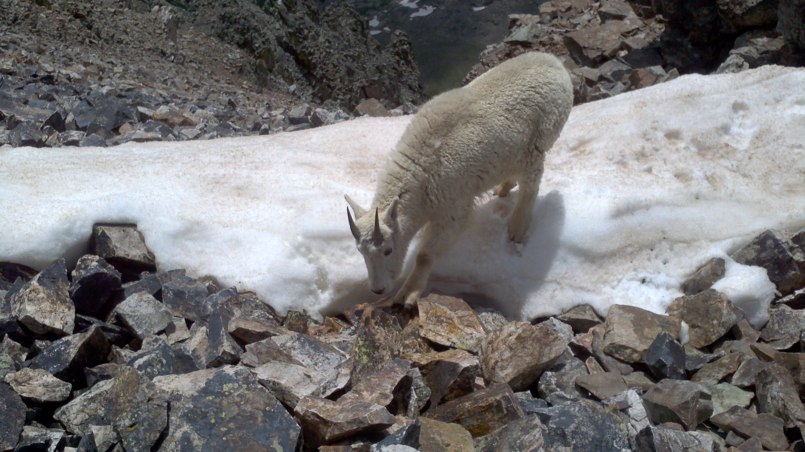
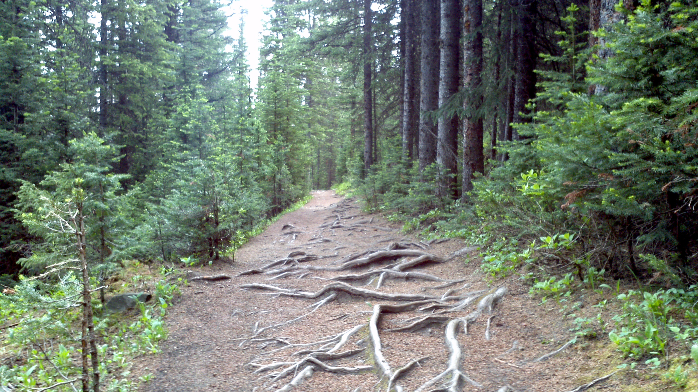

×
The Overview

The Overview
Bluegrass is a form of American roots music. Most likely beginning in the Appalachian Mountains region, it has many influences from traditional music of the British Isles.
This influence is shown through many bluegrass songs being adaptations of old Irish, Scottish or English folk tunes.
×
The Instruments

The Instruments
Instruments commonly used in Bluegrass include Banjo, Mandolin, Guitar, Violin (fiddle), and an assortment of other strings, winds, and seldomly drums. The banjo of course
is the most famous of these, as it was born from bluegrass. The combination of these instruments and their "solos" throughout songs are what give bluegrass the very unique
sound and twang.
×
Steve Martin

Steve Martin
Unbeknownst to many people, Steve Martin has played banjo since he was five years old. Throughout his acting career, Steve Martin released his own bluegrass songs. After
retirement, he devoted much more time to the music, starting a band and releasing multiple albums and touring across the United States. In my personal opinion, that man
can wail on a banjo, and I dare say he is as good as the legendary Earl Scruggs.